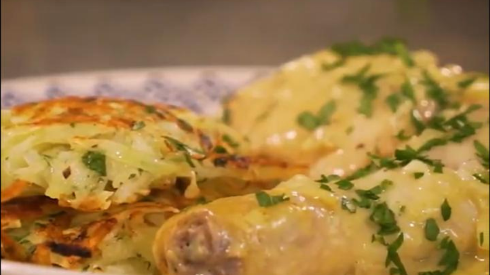

Pollo a la mostaza con papas rosti

Ingredientes
- ½ cebolla.
- Un diente de ajo.
- 4 presas de pollo.
- Sal y pimienta, a gusto.
- Aceite, c/n.
- 100 cc de vino blanco.
- Una cda de mostaza.
- 100 g de crema.
Para las papas rosti
- 2 papas.
- Una cebolla.
- Perejil.
- Sal y pimienta, a gusto.
Procedimiento
- Picar la cebolla en brunoise y el ajo bien chiquito.
- Salpimentar las presas de pollo y dorarlas de ambos lados en una sartén con aceite caliente. Retirar del
fuego y reservar.
- En la misma sartén, dorar el ajo y la cebolla y volver a colocar el pollo.
- Levantar el fondo de cocción con el vino.
- Agregar la mostaza, la crema y salpimentar.
- Tapar y cocinar durante 20 minutos.
- Pelar y rallar las papas. Rallar también la cebolla. Volcar todo en un bowl.
- Picar el perejil y agregarlo al bowl. Salpimentar.
- Armar las rosti con las manos y cocinar en un sartén caliente con aceite.
- Terminar la cocción durante 20 minutos en horno moderado.
- Servir el pollo a la mostaza con las papas rosti.